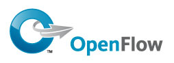

OpenFlow, democratizando SDN
Más vale tarde que nunca: si hace ya un tiempo nos arrancamos con una introducción teórica a las diferentes filosofías de virtualización de red, hoy retomamos el tema para ahondar en conceptos más específicos.
Hablemos de OpenFlow, probablemente la tecnología SDN más popular hoy en día.
Breve historia
Universidad de Stanford, 2007. Un estudiante de doctorado llamado Martín Casado publica un paper llamado Ethane: Taking Control of the Enterprise, en el que partiendo de la pregunta "¿Cómo podemos cambiar la arquitectura de red de una empresa para poderla hacer más gestionable?" desarrolla un diseño bajo una serie de principios básicos:
- Abstracción: La red debe ser gobernada por políticas de alto nivel.
- Automatización: Dichas políticas determinarán el camino que siguen los paquetes.
- Trazabilidad: La red debe garantizar el vínculo entre el tráfico y los usuarios.
Suena bastante “DevOps”, ¿no creéis? ;)
En este paper, Casado ya presenta dos de los principales elementos característicos de OpenFlow: el concepto de Controller (elemento central que aloja la inteligencia de la red) y el concepto de Flow (la entidad formada por un nodo origen, un nodo destino y el tráfico que intercambian). Unos meses después, el grupo de Redes de Alto Rendimiento de Stanford (entre los que se encontraba Casado) crea el proyecto OpenFlow e incluso libera una implementación pre-alpha en Noviembre del mismo año.
Ocho años después, la Open Networking Foundation es la organización dedicada a impulsar el estándar OpenFlow (que ya va por su release 1.4.0) y tiene tras de sí a cientos de miembros incluyendo la práctica totalidad de los gigantes tecnológicos actuales (un gallifante para el primero que escriba en los comentarios a quién de los grandes echa en falta... Y dos gallifantes si lo adivinó antes de ver la lista... :)
Arquitectura
Empecemos a describir OpenFlow con un ejemplo. Imaginad que al administrador de red de Acme, Inc le piden dar acceso a los invitados a Internet, pero sólo a través de proxy. Lo que cruzará por su mente será algo así:
"Mmm... déjame pensar... mejor creo un segmento nuevo para invitados. Tendré que crear una VLAN nueva y asignarla a los puertos de las salas de reuniones... a ver que no me deje ninguno... uy, y luego tendré que crear un servicio DHCP con un rango IP nuevo... y con alguna opción de autoprovisión de proxy, claro. Ah, espera, tendré que ir al router a crear las rutas para el nuevo rango IP, o si no no llegarán al proxy... Uf, y además tengo el firewall entre medias, así que me toca crear reglas de acceso... Ehm... el proxy lo tengo escuchando en el 8080 o en el 6128? Y tenía que hacer NAT o no? Nunca me acuerdo..."
De tener OpenFlow, la experiencia de nuestro pobre administrador de red hubiera sido muy distinta (dramatización):
"Luego me conecto al OpenFlow Controller y defino el grupo de puertos de invitados. Lo crearé como grupo dinámico, que contenga los puertos con 'Sala Reuniones' en su descripción. Al grupo le marcaré la opción de ‘Solo Proxy’ en el desplegable de ‘Acceso Internet’, instalo la política y listos..."
¿Brujería? No, una combinación de software y algo llamado Flow Tables.
Empecemos por el principio. En el estándar OpenFlow ya no existe distinción física entre switch, router, firewall o balanceador de carga. Cualquier dispositivo que manipule tráfico de red a nivel 2, 3 o 4 de la capa OSI recibe el nombre de OpenFlow Switch, y está controlado de forma centralizada por el OpenFlow Controller. Permitidme hablar de Switches y de Controllers de ahora en adelante.
El comportamiento de los Switches a la hora de manipular el tráfico vendrá dictado por su Flow Table local, que es una base de reglas condición-acción construida a partir de las primitivas que OpenFlow define en su estándar. Cuando una nueva trama Ethernet entre en el dispositivo, el Switch revisará su Flow Table para decidir qué hacer con ese tráfico. Algunos ejemplos de primitivas serían:
- Leer/modificar dirección MAC origen/destino
- Leer/Modificar dirección IP origen/destino
- Leer/Modificar puerto tcp/udp origen/destino
- Leer/Modificar campo VLAN
- Egresar por puerto(s) X
- Enviar copia del tráfico al Controller
Por ejemplo, el equivalente a un hub sería un Switch con una única primitiva instalada: "para cualquier trama Ethernet entrante, egresar por todos los puertos". Modelar el comportamiento de un switch tradicional con primitivas OpenFlow es algo más complejo y que veremos en el próximo post... aunque os espera el golden gallifante si me dáis la solución en los comentarios... :)
It's the software, stupid!
Pero vamos a ver... si tengo que andar enredando con primitivas que hablan de puertos, IP's o VLANes, ¿dónde quedan los principios de Casado sobre las políticas de alto nivel que controlan la red?
La clave está en que es el Controller, y no el administrador, el responsable del mantenimiento de las Flow Tables de los Switches. El Controller es el 'cerebro' de la red y el 'intérprete' del administrador, y traducirá sus diseños de alto nivel a aburridas, largas y complejas Flow Tables que instalará a lo largo de los diferentes Switches de nuestra red.
Es importante entender que el estándar OpenFlow define sólo una parte de cómo es el Controller - lo que llamamos el Southbound API, que define la comunicación entre Controller y Switches y la manipulación de las Flow Tables y sus primitivas. Pero las capas de abstracción adicionales (Northbound API) que van a permitir a nuestro querido administrador en Acme configurar la red a golpe de menú NO se incluyen en el estándar. Aquí es donde está surgiendo la verdadera innovación, con distintas propuestas Open Source y privativas de las que iremos hablando en próximos posts.
¿Es esto realmente el futuro?
Decididlo vosotros:
- Buscad en Google "[aquí_su_fabricante_tecnológico_favorito] + openflow" y contemplad cómo todo el mundo se está apresurando en tener versiones de sus productos que 'hablen' OpenFlow.
- Por cierto, Google usa OpenFlow. Después de dos años de rediseño, en 2011 se completó la migración de su red interna a una arquitectura OpenFlow. Aquí tenéis el vídeo (47min) del Open Networking Summit de 2012 donde Urs Hoelzle presentó el proyecto.
- Martín Casado y sus compañeros de Stanford crearon Nicira Networks, compañía dedicada a OpenFlow, SDN y virtualización de red. La vendieron a VMWare en 2012 por un gritón de dólares.
Nos vemos en el próximo post con un laboratorio de OpenFlow. ¡Hasta entonces!